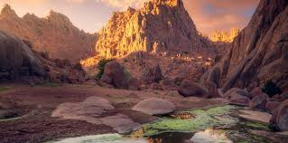

المناظر الطبيعية
تتميز حائل بجمال طبيعتها الفريد، حيث تمتزج الجبال الشامخة مع الصحراء الذهبية، مما يخلق مناظر طبيعية خلابة تأسر القلوب.


تتميز حائل بجمال طبيعتها الفريد، حيث تمتزج الجبال الشامخة مع الصحراء الذهبية، مما يخلق مناظر طبيعية خلابة تأسر القلوب.
تعد حائل وجهة مفضلة للرحالة والمستكشفين، فقد زارها العديد من الرحالة التاريخيين مثل ابن بطوطة وكتبوا عن جمالها وأهلها الكرماء.